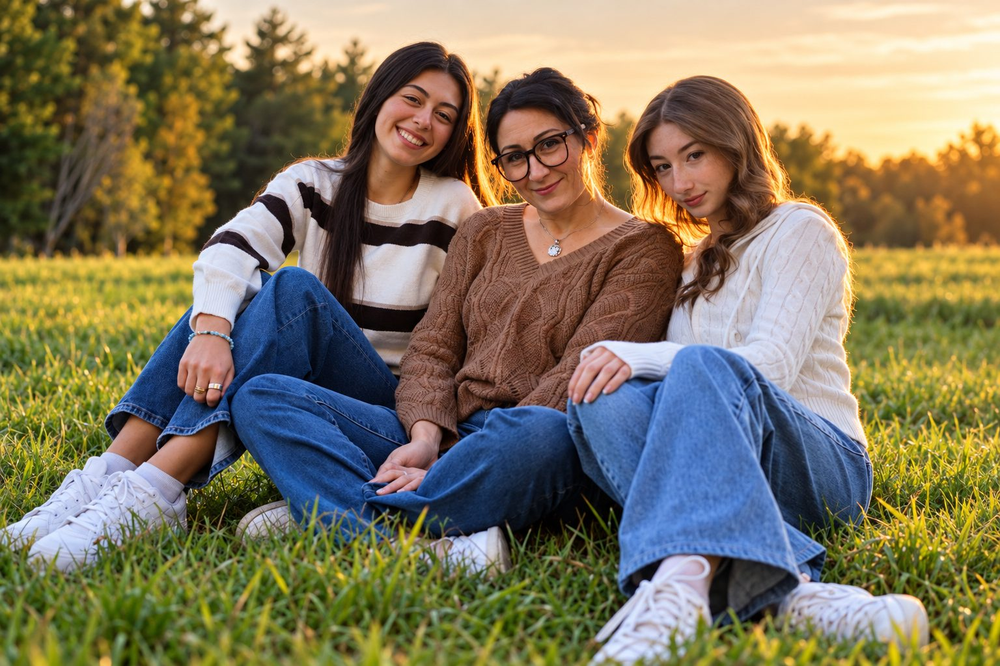
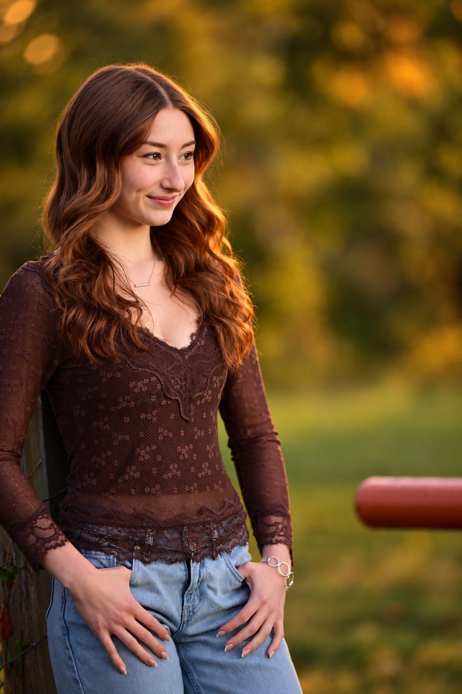
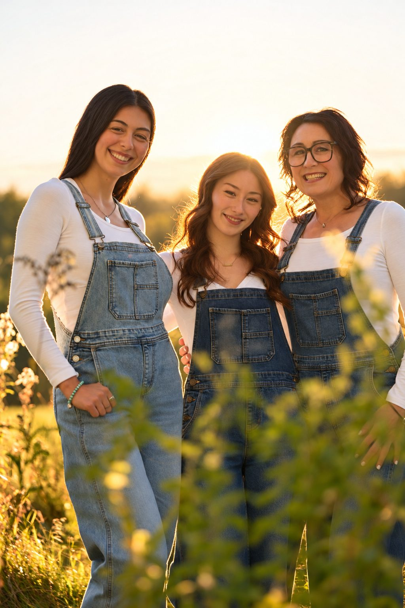
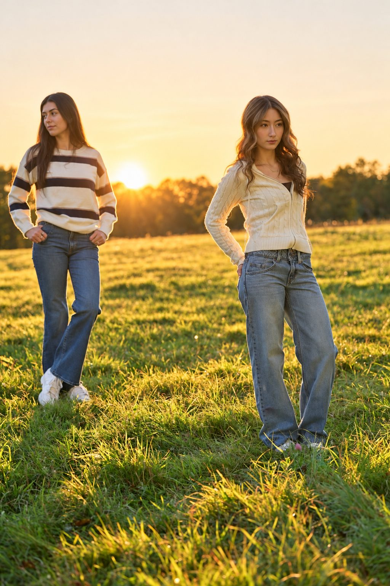
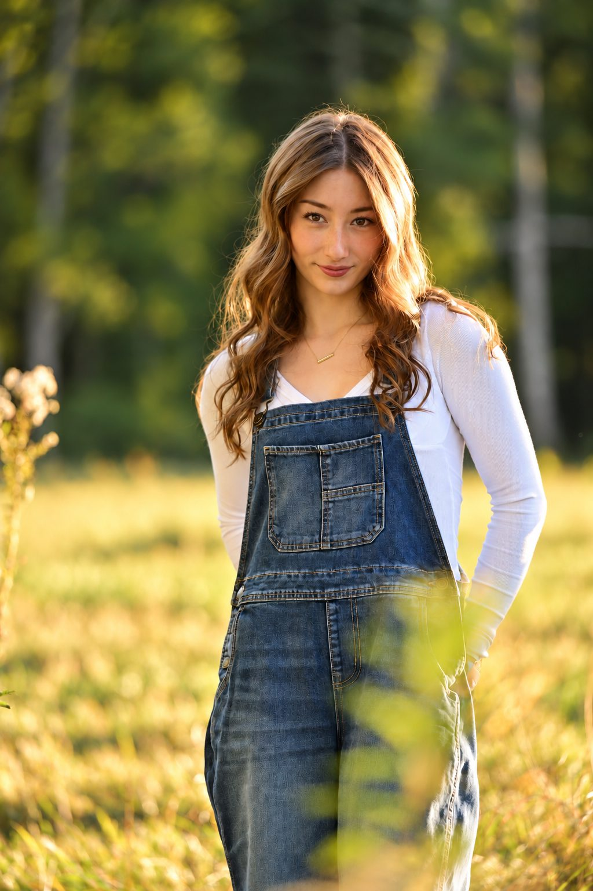
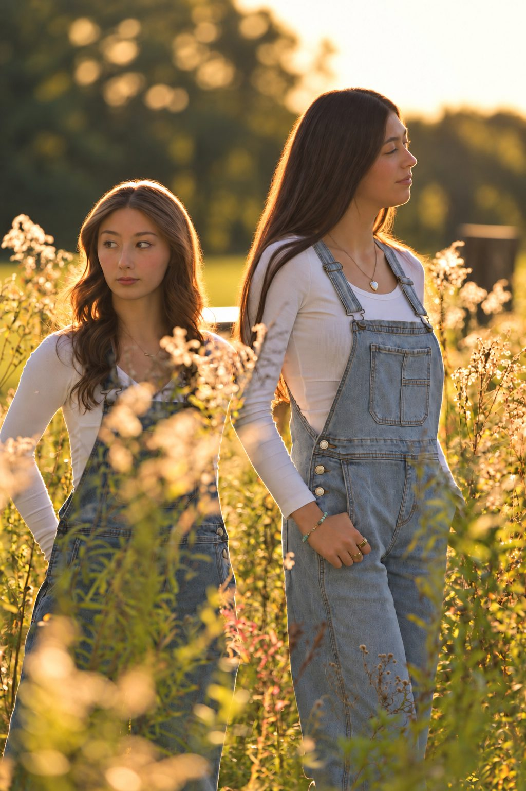

Senior portraits
A relaxed, on-location session built around who you are right now, with multiple outfits, multiple locations, and golden-hour light.
FAMILY & SENIOR PORTRAITS · NEW HAMPSHIRE
On-location portrait sessions for families, seniors, and the people who matter to you, timed to the best light New Hampshire has to offer.
Book a sessionSouthern New Hampshire to the Lakes Region

AS YOU ACTUALLY ARE
Sessions take place on location: a favorite field, a familiar trail, golden light at the edge of the day, so the portraits feel like you, not like a studio backdrop.
RECENT WORK





PACKAGES & PRICING
Every family and senior package, add-on, and travel detail, all in one place.
View pricingLET’S WORK TOGETHER
Tell us who's involved, where you'd like to shoot, and your ideal timing. We'll start with a conversation.
Start a conversationServing Southern New Hampshire
through the Lakes Region.